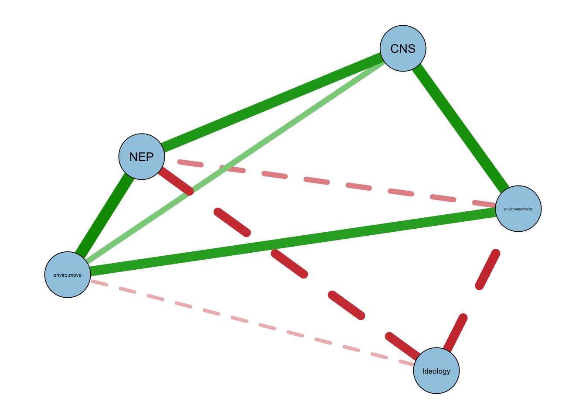
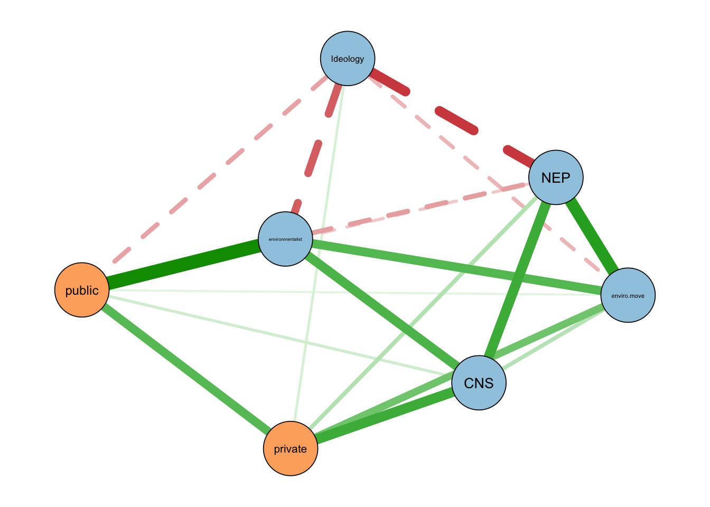

| Variable | M | SD | Min | Max | 1 | 2 | 3 | 4 | 5 | 6 | 7 | 8 |
|---|---|---|---|---|---|---|---|---|---|---|---|---|
| 1. Pro-env. behavior (composite) | 5.52 | 2.98 | 0.00 | 13 | ||||||||
| 2. Public behavior | 1.80 | 1.92 | 0.00 | 7 | 0.87 | |||||||
| 3. Private behavior | 3.60 | 1.58 | 0.00 | 5 | 0.75 | 0.33 | ||||||
| 4. NEP | 3.43 | 0.62 | 1.40 | 5 | 0.26 | 0.17 | 0.30 | |||||
| 5. CNS | 3.54 | 0.53 | 1.71 | 5 | 0.46 | 0.36 | 0.43 | 0.45 | ||||
| 6. Ideology (lib-con) | 3.84 | 1.62 | 1.00 | 7 | -0.28 | -0.28 | -0.17 | -0.37 | -0.26 | |||
| 7. Environmentalist identity | 0.24 | 0.43 | 0.00 | 1 | 0.43 | 0.46 | 0.20 | 0.16 | 0.32 | -0.27 | ||
| 8. Env. movement identity | 2.73 | 0.74 | 1.00 | 4 | 0.38 | 0.30 | 0.35 | 0.46 | 0.41 | -0.31 | 0.3 |
Environmental Belief System Networks and Pro-Environmental Behavior
Introduction
Explaining Pro-Environmental Behavior
Belief System Networks
Study 1
Data and Measures
Our dependent variable is pro-environmental behaviors, and we use a 13-item scale from the 2000 Gallup Earth Day Poll. Respondents were asked, “Which of these, if any, have you, yourself, done in the past year?” Possible responses included, “Yes, have done; No, have not done; No opinion”, and yes responses were coded as a 1 and no and no opinion were coded as 0.
The behaviors were: (1) Avoided using certain products that harm the environment. (2) Been active in a group or organization that works to protect the environment. (3) Voted for or worked for candidates because of their position on environmental issues. (4) Contributed money to an environmental, conservation or wildlife preservation group. (5) Contacted a public official about an environmental issue. (6) Contacted a business to complain about its products or policies because they harm the environment. (7) Signed a petition supporting an environmental group or some environmental protection effort. (8) Attended a meeting concerning the environment. (9) Tried to use less water in your household. (10) Bought some product specifically because you thought it was better for the environment than competing products. (11) Voluntarily recycled newspapers, glass, aluminum, motor oil or other items. (12) Reduced your household’s use of energy. (13) Bought or sold stocks based on the environmental record of the companies.
For the purposes of analysis, we use a composite measure that uses all 13 items as well as measures of private environmental behaviors (such as recycling) and public environmental behaviors (such as attending a public meeting about the environment). The Cronbach’s α for the 13-item composite measure is 0.79, for the subset of private behaviors it is 0.75, and for the subset of public behaviors, it is 0.76. All three versions of the measure can be considered reasonably reliable.
As noted, we have two measures of environmental orientations including the Connectedness to Nature Scale (CNS) and the New Ecological Paradigm (NEP). The CNS was measured based on agreement with a 1 - strongly disagree to 5 - strongly agree scale with 14 statements such as, I often feel a sense of oneness with the natural world around me and I have a deep understanding of how my actions affect the natural world. The Cronbach’s α for the CNS is 0.81. Similar to the CNS, the NEP scale is based on agreement on a 1 to 5 scale with several statements including We are approaching the limit of the number of people the earth can support and The balance of nature is very delicate and easily upset. The Cronbach’s α for the NEP is 0.82. Table 1 shows the summary statistics and correlations for each of the scales. Exploratory graph analysis confirms that the NEP and CNS items each form a single dimension, and the belief network is not sensitive to whether the scales are scored as raw item means or as network dimension scores. The supplemental materials report this analysis.
Results
Environmental Belief System Network

Environmental Belief System Network with Behavior

Shortest paths from beliefs to behavior
| Belief | To public | To private | Mean distance |
|---|---|---|---|
| environmentalist | 2.7 [2.3, 3.5] | 7.3 [6.2, 8.6] | 5.0 |
| CNS | 7.0 [5.8, 8.8] | 3.8 [3.1, 5.2] | 5.4 |
| enviro.move | 7.2 [5.8, 10.3] | 5.4 [4.0, 9.2] | 6.3 |
| NEP | 10.5 [7.5, 11.9] | 7.7 [6.4, 8.8] | 9.1 |
| Ideology | 7.8 [5.7, 10.3] | 11.6 [8.2, 13.0] | 9.7 |
Study 2
Data and Measures
For the second study I use data from the 2020 wave of the International Social Survey Programme (ISSP) environment module, which surveyed 44,100 respondents across 28 countries. The module repeats a set of environmental attitude and behavior items that have been fielded since 1993, and it allows the belief network approach to be examined outside the United States.
The ISSP does not include the NEP or CNS scales, so I construct comparable belief measures from the module’s attitude items. Using exploratory graph analysis I identify four belief dimensions and score each as the mean of its items, oriented so that higher values indicate more pro-environmental positions. Environmental commitment combines concern about the environment with willingness to pay higher prices and taxes and a personal norm to act (α = 0.75). Ecological worldview captures low environmental and climate-change skepticism and is the closest available analog to the NEP (α = 0.76). Perceived threat is the mean of seven items rating the danger posed by specific environmental hazards (α = 0.80). Nature affinity combines enjoyment of nature with the frequency of outdoor leisure and is a thin analog to the CNS (α = 0.61). I also include a left-right ideology measure based on the party the respondent reports voting for. The supplemental materials describe the scale construction.
The dependent variable is again pro-environmental behavior, measured with the same public and private distinction used in Study 1. The ISSP asks about six behaviors with a close counterpart in the 2000 Gallup items. Public behavior is a count of four collective actions, membership in an environmental group, signing a petition, donating money, and taking part in a protest. Private behavior is a count of two household actions, recycling and avoiding environmentally harmful products. Exploratory graph analysis of the six items recovers this public-private grouping.
Results
I estimate a separate belief network for each of the 28 countries, following the Study 1 procedure, and compute the shortest path from each belief to the public and private behavior nodes. Figure 3 shows the networks for four countries that span the range of results. In Switzerland, the typical case, environmental commitment is closest to behavior. In the United States the ordering is close to a three-way tie among environmental commitment, ideology, and nature affinity. India and Australia are the two countries where a different belief, nature affinity and ideology respectively, has the shortest path.
Table 3 reports the mean rank of each belief across countries, where a rank of one identifies the belief closest to behavior in a given country. The pattern matches Study 1. Environmental commitment has the shortest mean path to behavior in 24 of 28 countries, and ecological worldview is next. Perceived threat, nature affinity, and ideology are peripheral. A nonparametric bootstrap with 1,000 resamples per country shows that this ordering is stable. The belief identified as closest holds in a majority of resamples in 27 of 28 countries, so the cross-country regularity is not an artifact of a few unstable networks.

| Belief | Mean rank | Closest in | Bootstrap-supported |
|---|---|---|---|
| Environmental commitment | 1.25 | 24 | 24 |
| Ecological worldview | 2.50 | 1 | 0 |
| Nature affinity | 3.00 | 3 | 2 |
| Perceived threat | 3.82 | 0 | 0 |
| Ideology (left-right) | 4.06 | 1 | 1 |
As noted, the belief that combines concern, willingness to pay, and a personal norm to act sits closest to behavior in both studies, while the more abstract worldview measures are further away. This is likely because beliefs tied to identity and personal commitment are more proximate to action than beliefs about how the natural world works.